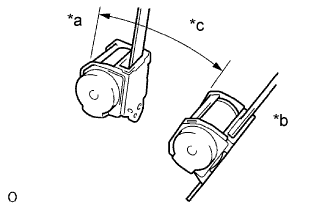

REAR NO. 1 SEAT OUTER BELT ASSEMBLY > INSPECTION |
| 1. INSPECT REAR NO. 1 SEAT OUTER BELT ASSEMBLY |
|  |
Check the ELR.
When the inclination of the retractor is 15° or less, check that the belt can be pulled from the retractor. When the inclination of the retractor is more than 45°, check that the belt locks.
If the operation is not as specified, replace the rear No. 1 seat outer belt assembly.
| *a | Unlock |
| *b | Lock |
| *c | 45° |
w/ ALR:
Check the fastening function of the child restraint system.
When the belt is pulled out fully, check that the belt automatically starts to retract.
After the belt is fully retracted, check that the belt can be pulled out and retracted again.
If the operation is not as specified, replace the rear No. 1 seat outer belt assembly.